It is quite easy and can be made by any good handed person.
Even companies could specialize in doing it and make profits while helping the planet !
It will probably not be technically possible to recycle all the life rafts but here is how we did it with the one we had :
A life raft is one of few thousands-dollar products that in most cases will never be used before one has to replace it after 10 to 20 years depending on national laws and aging condition.
Thousands and thousands of them are thrown away every year while they are like new !
It is not really ecofriendly nor sustainable, so came the idea to give a second life to these life rafts by making dinghies.
Thousands and thousands of them are thrown away every year while they are like new !
It is not really ecofriendly nor sustainable, so came the idea to give a second life to these life rafts by making dinghies.
We used a 10-year old 6-person Zodiac square raft.
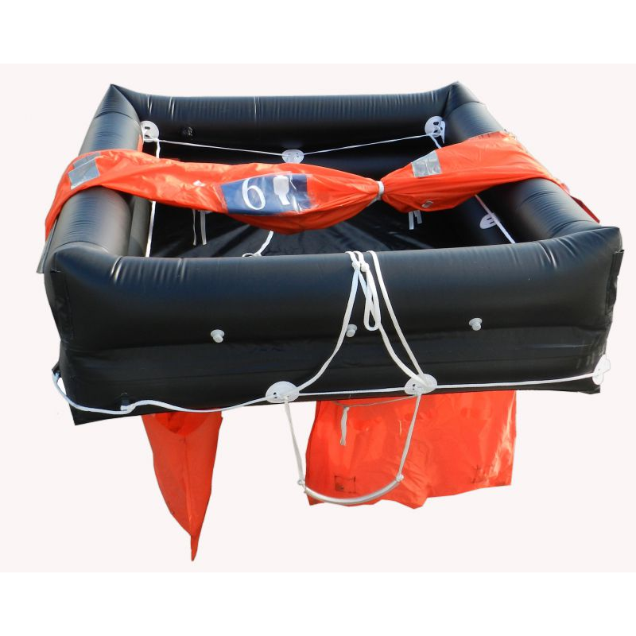
We removed the tent, the floor, the compressed air bottle, its hoses and the small ropes at the 4 corners.
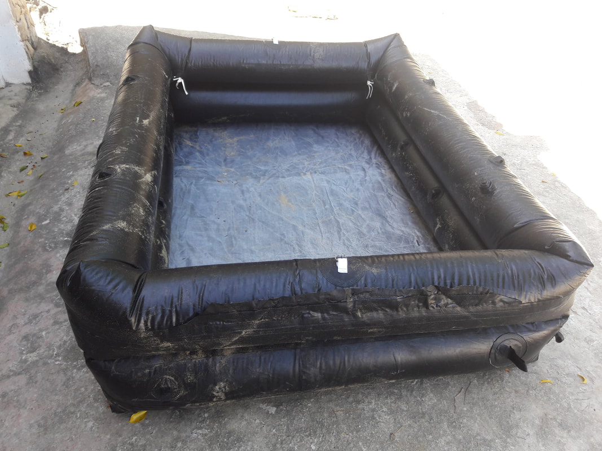
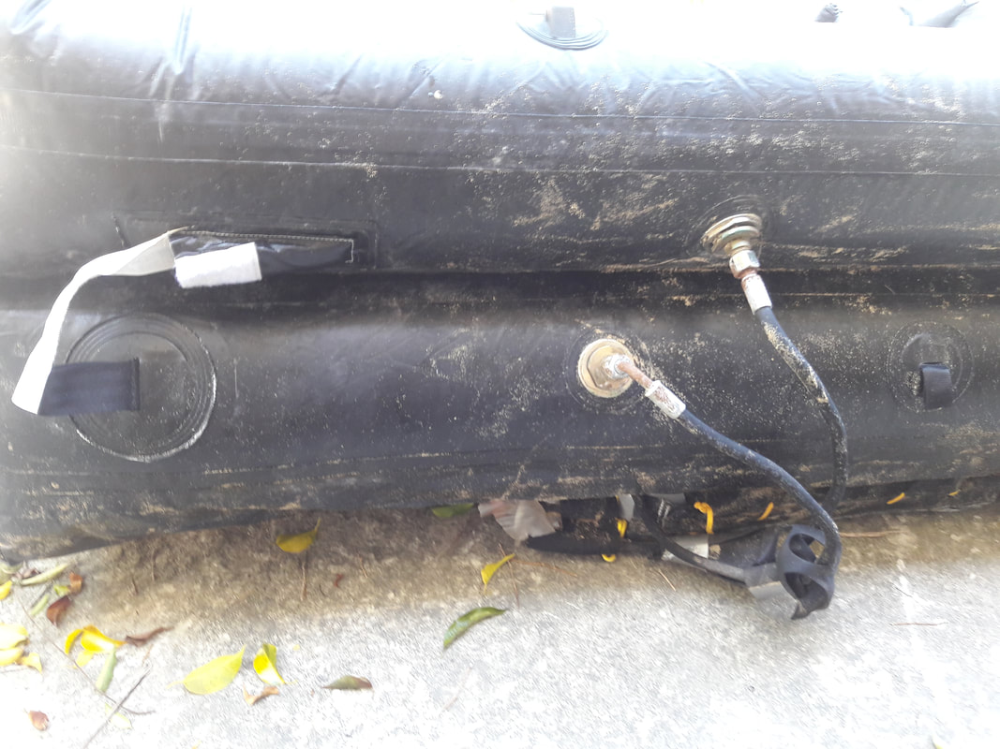
We kept a 5cm / 2 inches wide band of floor along the inflated tubes

We inflated it using the 2 already installed inflation valves.

It was then easy to give the shape we wanted to our future dinghy.
There is NO modificacion to be done to the inflatable part itself, it is ready for use as a dinghy.
We made a waterproof floor with a piece of PVC coated fabric (from an old awning /tarpaulin) with the wished shape.
There is NO modificacion to be done to the inflatable part itself, it is ready for use as a dinghy.
We made a waterproof floor with a piece of PVC coated fabric (from an old awning /tarpaulin) with the wished shape.
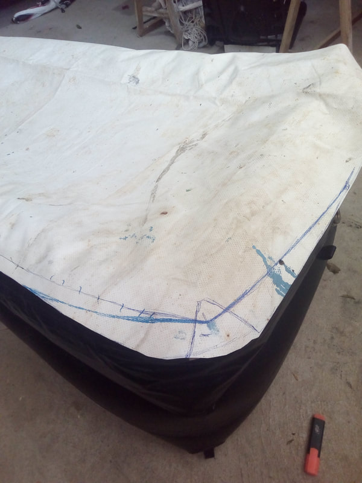
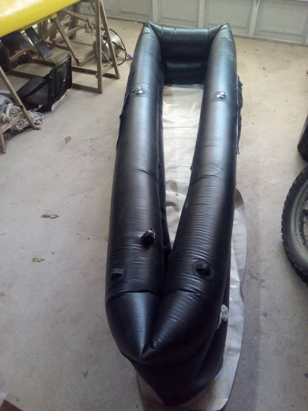
We sewed and glued it to the 5cm wide fabric band.
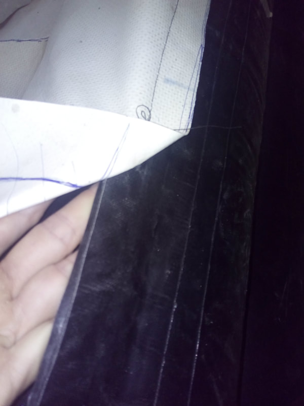

It’s certainly simpler, faster and more waterproof to just glue the floor to the bottom of the inflatable tube.
We found 3 leaks on this never used life raft, what is not acceptable in my view, as a serious factory inflation test should have found them :
- one where there are several layers of fabric glued together. Air was leaking at an extra thickness fold
- the 2 manual inflation valves were leaking. We replaced them by better valves where the contact zone is not made of plastic (at the right) but rubber (at the left)
- one where there are several layers of fabric glued together. Air was leaking at an extra thickness fold
- the 2 manual inflation valves were leaking. We replaced them by better valves where the contact zone is not made of plastic (at the right) but rubber (at the left)

We made a keel with a foam noodle attached to the soft floor with velcros
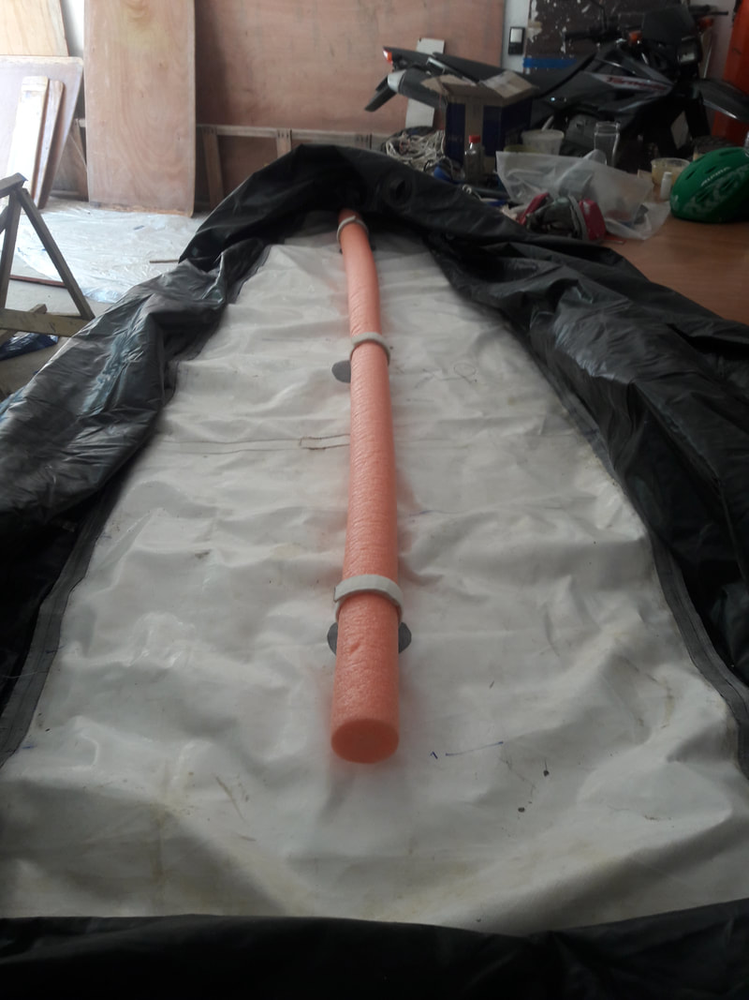
We made a rigid floor with a 10mm basic plywood board that we protected from water with epoxy resin.
The floor is in 2 pieces with a connecting part made from an aluminium profile found in my garage.
The floor is in 2 pieces with a connecting part made from an aluminium profile found in my garage.

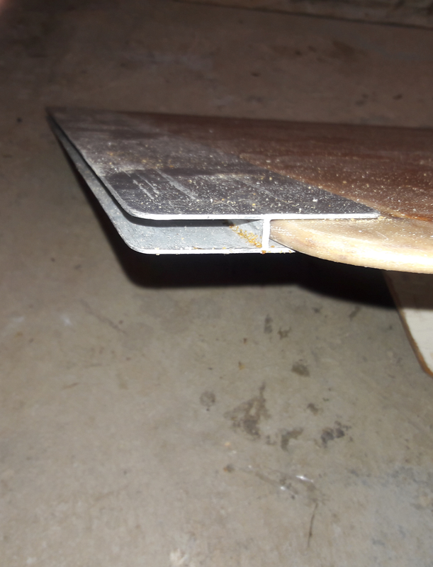
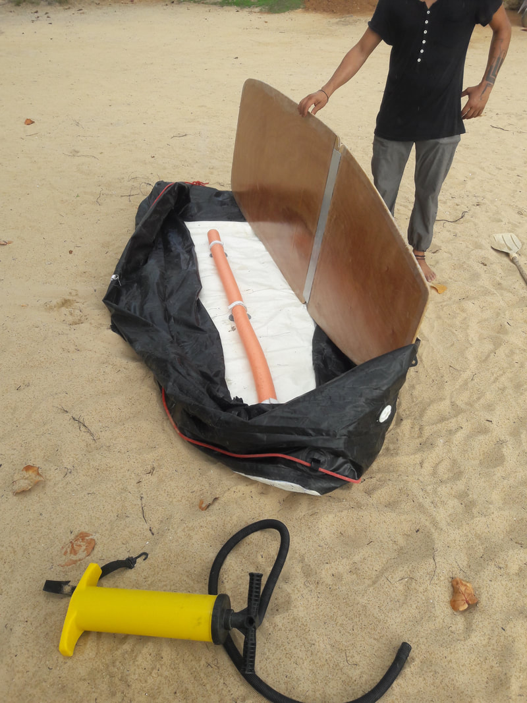
We made 2 seats with 15mm plywood (too long – will be shortened)

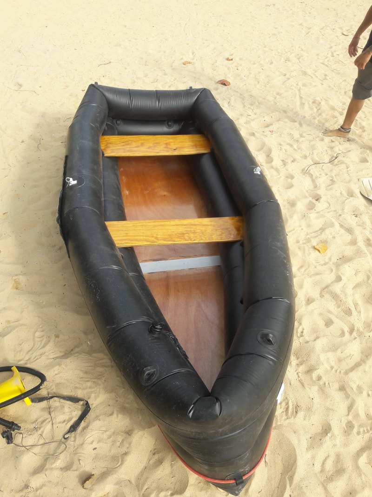
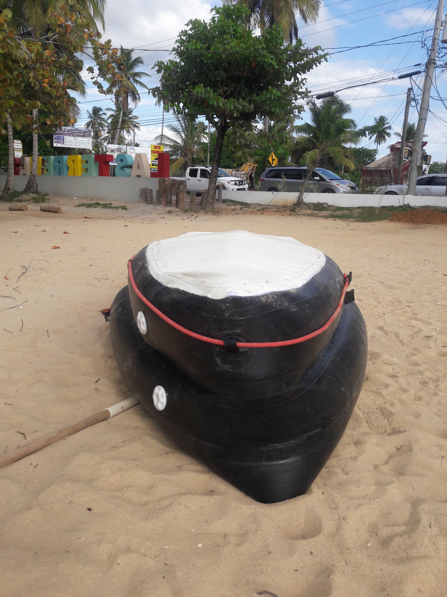
First test was successful with one and two persons onboard, the dinghy is light, stable, comfortable and relatively fast.
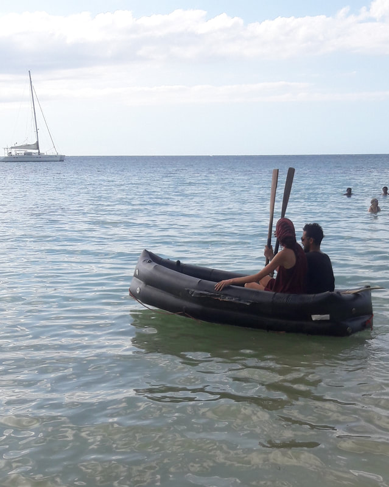
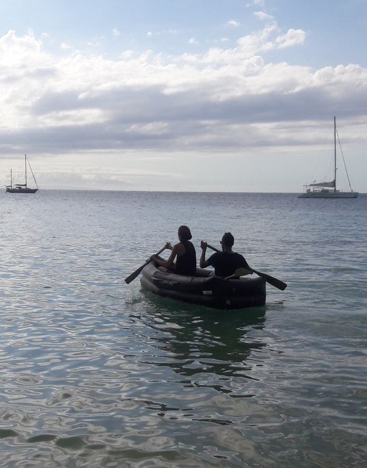
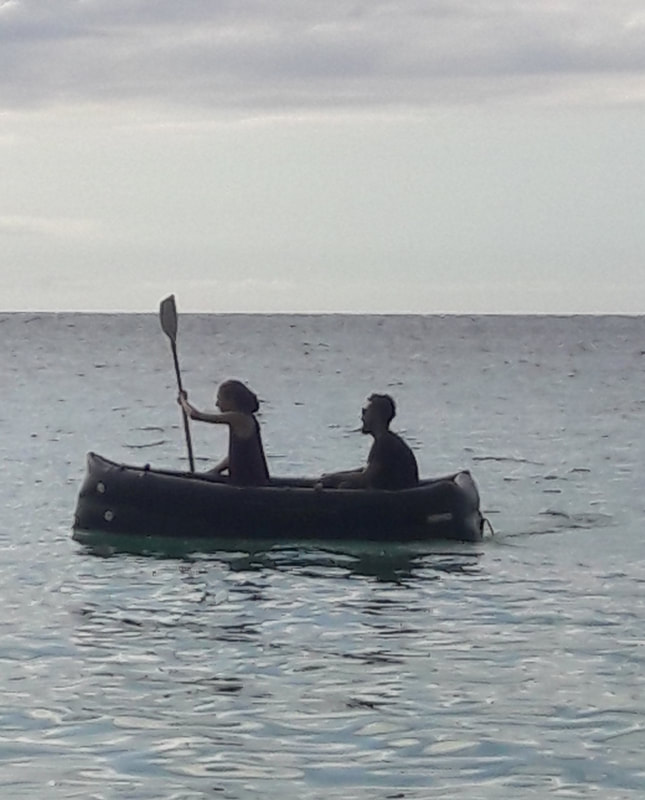
Most parts to make it are used ones gotten for free. We purchased the PVC glue, a 10mm plywood board and a foam noodle.
Epoxy included, cost is around 35 US$.
Reinforcements and sun protection will be added later.
Epoxy included, cost is around 35 US$.
Reinforcements and sun protection will be added later.
A first test with an Optimist sail and daggerboard has been done.

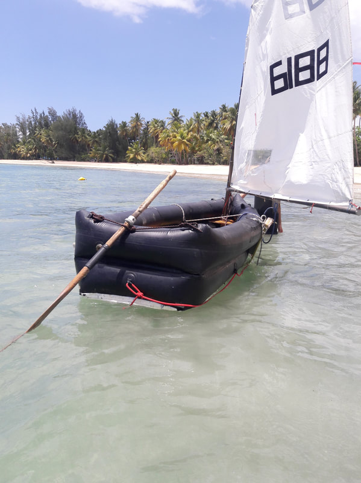


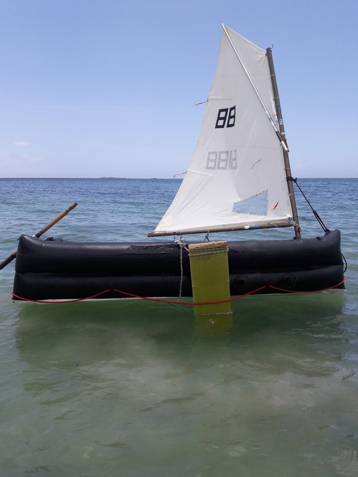

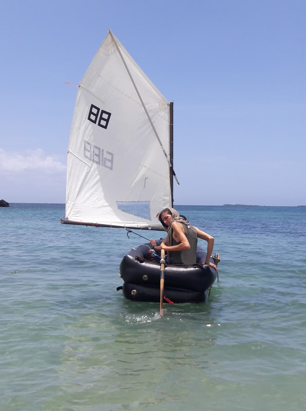

This invention has been developed in an open-source spirit. It is free for people or companies to make such dinghies. Pictures can be copied (please give credit)
Published on June 18th, 2019